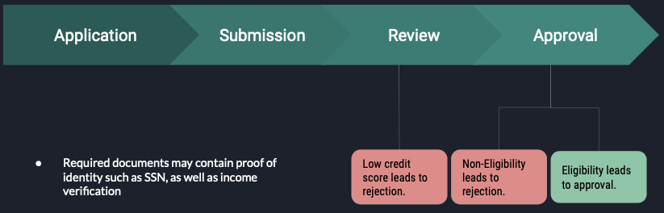
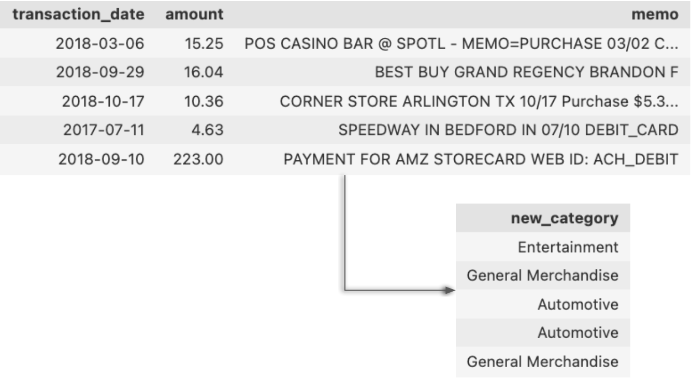
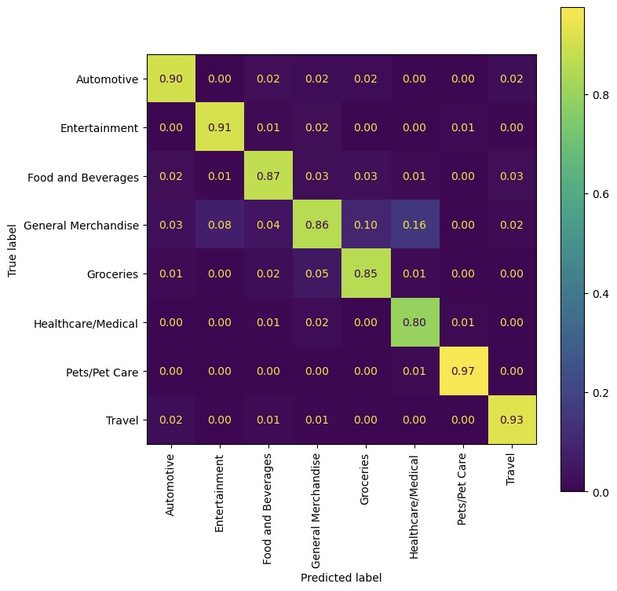

Introduction

During a loan/credit approval. There are several processes applicants needs to go through:
- Application: Applicants fill out a loan application form for a credit card or other personal loan.
- Submission: Applicants submit the form along with required documents* to the lenders for review.
- Review: Lenders evaluate applicants’ credit worthiness (credit scores) using credit scoring models.
- Approval: High credit scores gained pre-approval, but banks checks documents for final approval.
Draw Backs
When an applicant applies for a loan or a credit card, lenders such as banks look at the applicant's bank statements to determine their eligibility. This may includes checking for:
- Savings and cash flow
- Unusual deposits
- Debt
- Non-sufficient funds fees
- Large, undocumented deposits
Therefore, we hope to answer the question:
How can we utilize NLP to enable the "credit invisible,” such as young adults and immigrants without an established line of credit, to have an equal opportunity for fair lending?
Methods
Recall the factors lenders hope to (or not to) see in a banking statement, we see that these factors may not generalize to people of all demographics. Therefore we attempted to extract more information from banking statement by: determining the category of each transaction using its date, amount, and most importantly, statement memo.
Using Data to Predict Categories
To get to this stage, we first worked to transform or engineer our features into suitable format to be able to build our models.
Natural language processing
Natural language processing is an ability for a computer to process and interpret human language. Its application can range from language translation to text summarization. In this case, we are using NLP to transform our memo column in order to build a model summarizing a user's transactions (on bank statement) into 8 different categories.
- Food and Beverages
- Entertainment
- General Merchandise
- Travel
- Automotive
- Healthcare/Medical
- Groceries
- Pets/Pet Care
TF-IDF
TF-IDF, term frequency-inverse document frequency, quantify the relevance of a word in a given document among the collection of documents. It counts the term frequency relative to documents. Therefore, at the end we would obtained a TF-IDF features that have counts according to each transaction. Here we then obtain:
- Frequency a word appear per transaction
- Frequency a word appear in corpus of transaction
Text Cleaning
While TF-IDF is keeping track of the term frequency, it would be best to get rid off some unnecessary words and fix some of the vocab that may have the same meaning so that TF-IDF matrix is not unnecessary large. For example:- Stop words: a, an ,the
- Puncuation: , : .
- Capitalization: WALMART -> walmart
Non-text Feature Engineering
To maximize information for future task, we feature engineered the non-text data (date, amount) includes:
- Standardization on amount
- Whether the amount is whole number
- Create more features from date
- Year
- Month
- Day
- Weekend
- Holiday
Models
Once we have prepared our data into a suitable format. We already to proceed to train our model. Since we have to types of data: text-only and non-text. We decided to create an ensemble model of two sub models: XGBoost and Logistic Regression. XGBoost model will be trained with the non-text features while the logistic regression will be supplied with the text-only features.
XGBoost
 XGBoost,
or extreme gradient boosting, it is a technique modified to build a strong classifer from a number of
weak
classifiers. Traditionally, the model is built from a series of smaller models. At first, the training
data will be train on the first model, then the mislabeled instances will pass down to the second
model until all the training point is correctly classified or the maximum number of the smalled model is
reached. As a result, the final model becomes a linear combination of smaller models. During the
process, the weights of the training data are tweaked for the next model. In XGboost, the weights are
adjusted with the residual errors of the predecessors. This type of technique can be used to predict
regression, classification, ranks, and even user-defined predictions.
XGBoost,
or extreme gradient boosting, it is a technique modified to build a strong classifer from a number of
weak
classifiers. Traditionally, the model is built from a series of smaller models. At first, the training
data will be train on the first model, then the mislabeled instances will pass down to the second
model until all the training point is correctly classified or the maximum number of the smalled model is
reached. As a result, the final model becomes a linear combination of smaller models. During the
process, the weights of the training data are tweaked for the next model. In XGboost, the weights are
adjusted with the residual errors of the predecessors. This type of technique can be used to predict
regression, classification, ranks, and even user-defined predictions.
Logistic Regression
 Logistic Regression, is often
used in classification problems. It was derived from an old technique, linear regression, that estimates
the probability of an event happened given the dataset. It is often important to utilize the model's
probability output rather than it's direct classification output, especially in our case where we are
looking to
combine different models.
Logistic Regression, is often
used in classification problems. It was derived from an old technique, linear regression, that estimates
the probability of an event happened given the dataset. It is often important to utilize the model's
probability output rather than it's direct classification output, especially in our case where we are
looking to
combine different models.
Results
Scoring Metric: Accuracy
There are many evaluation metrics we could use for this classification problem. We chose accuracy because of the nature of the problem. We introduce definitions of each metric we considered and our reasoning for prioritizing accuracy:
- Accuracy : measures the number of correctly classified labels over all labels.
- Precision: measures the number of correctly classified lables over all labels, assuming all the prediction falls into 1 class.
- Recall: measures the number of correctly classified lables over all labels, assuming all the true labels falls into 1 class.
- F1 Score: measures the harmonic mean of precision and recall.
Confusion Matrix for 8 Categories on Ensemble Model
Above is the confusion matrix of all classes. Through the diagonal matrix, we see the all the probability of predicted label being correctly labeled.
| Category | Accuracy |
|---|---|
| Automotive | 90% |
| Entertainment | 91% |
| Food and Beverages | 87% |
| General Merchandise | 86% |
| Groceries | 85% |
| Healthcare/Medical | 80% |
| Pets/Pet care | 97% |
| Travel | 93% |
| Average | 88.6% |
Conclusion
Despite credit score being a significant metric for lenders during the loan application approval process, this single metric fails to consider how underrepresented demographics may be deemed as unworthy of credit when in fact they should be worthy. This is a lose-lose for both lenders and applicants. On one hand, lenders lose potential customers ("the credit invisible") who are excluded due to this traditional process. At the same time, these applicants are not allowed to receive credit, which makes things like buying a house seemingly impossible. We aim to explore the limitations of traditional credit score models and propose an alternative method for determining creditworthiness that is more inclusive and equitable. We approach this problem by utilizing supplmental feautures like a user's categorized transaction history to the traditional credit scoring model. With a user's bank statements, we could extract information like the transaction date, amount, and memo to flag each transaction into a category (with 89% accuracy). The next step would be to utilize these categories in creating new features to optimize common credit scoring models to make them stronger and more fair. This approach solves both of the problems we described above as it will aid applicants with low/no credits as well as profit-hungry institutions looking to acquire more customers in financial industry.
Chung En Pan, cepan@ucsd.edu
Kyle Nero, knero@ucsd.edu
Koosha Jadbabaei,
kjadbaba@ucsd.edu
Nathan Van
Lingen, nvanling@ucsd.edu